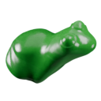
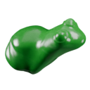

Introduction
liam collod
vfx artist software developer
French picture maker, I have been exploring the digital medium for the past 10 years. I consider myself as a versatile tinkerer whose able to craft pretty pictures, as much as building the software to make them. I strongly believe in knowledge-sharing and care a lot about improving human experience in the creative process.
TITLE "Kodak 2383"
LUT_3D_SIZE 33
LUT_3D_INPUT_RANGE 0.0 1.0
0.027455 0.027940 0.030632
0.028771 0.028640 0.031588
0.029688 0.029229 0.032502
0.033218 0.029886 0.033110
0.038679 0.030846 0.033368
0.040203 0.032147 0.033662
0.045908 0.033592 0.033716
0.060469 0.035176 0.033571
0.074147 0.038764 0.033567
0.086850 0.042979 0.032703
0.109447 0.045148 0.030796
0.141233 0.047389 0.027518
0.171253 0.050028 0.015106
0.203916 0.052315 0.000920
0.245081 0.053624 0.000000
0.293532 0.051818 0.000000
0.343678 0.046793 0.000000
0.390342 0.037880 0.000000
0.431468 0.005177 0.000000
0.472838 0.000000 0.000000
0.511870 0.000000 0.000000
0.545101 0.000000 0.000000
0.571750 0.000000 0.000000
0.594285 0.000000 0.000000
0.613485 0.000000 0.000000
0.629549 0.000000 0.000000
0.642509 0.000000 0.000000
0.652898 0.000000 0.000000
0.661570 0.000000 0.000000
0.668915 0.000000 0.000000
0.674400 0.000000 0.000000
0.678920 0.000000 0.000000
0.683616 0.000000 0.000000
0.027112 0.030111 0.031707
0.028601 0.030703 0.032538
0.028601 0.030703 0.032538
0.029392 0.031250 0.033394
0.032931 0.031871 0.033955
0.038694 0.032812 0.034168
0.040230 0.034168 0.034502
from pathlib import Path
import OpenImageIO as oiio
def read_image(path: Path) -> oiio.ImageBuf:
"""
Read given image from disk as oiio buffer.
"""
return oiio.ImageBuf(str(path))
 
